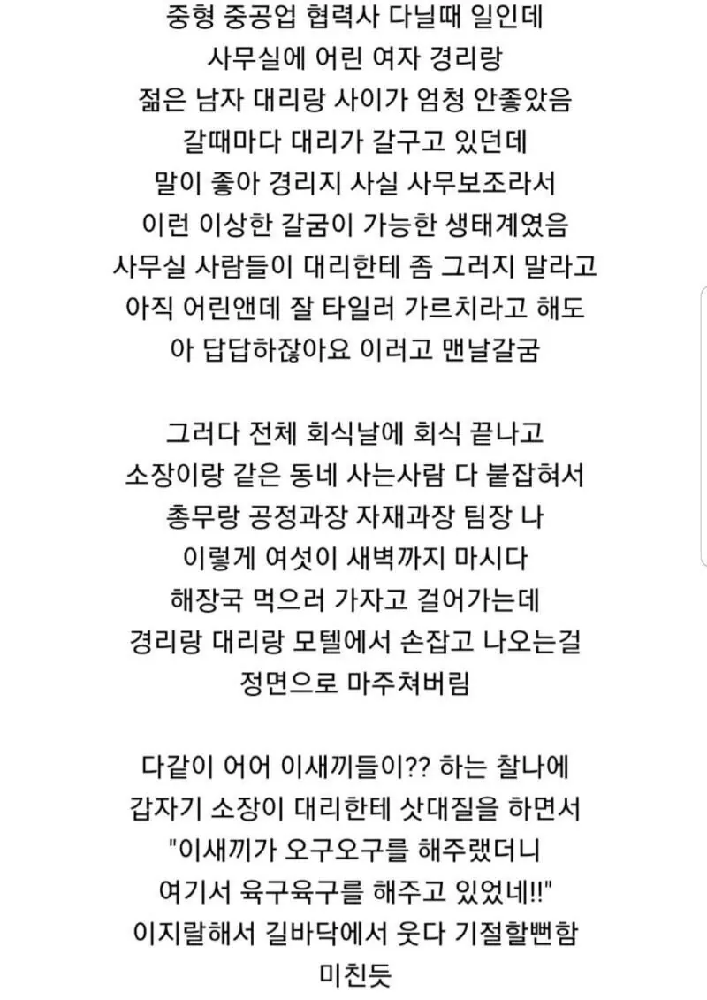

경리랑 사이 안좋은 대리 썰
댓글
오
소장님 여기서 이러시면 안돼요!

그러고 응애응애 하는건가요?
추천수까지 완벽하네
ㅋㅋㅋㅋㅋㅋㅋㅋㅋㅋㅋㅋㅋㅋ
ㅋㅋㅋㅋㅋㅋㅋㅋㅋㅋㅋㅋㅋㅋㅋㅋㅋ
ㅋㅋㅋ 티 안 내려고 일부러 갈구는 척했구만?
갈구다가 가끔씩 잘해주는게 맛있거든요~~
포티문학 ㄷㄷ
ㅈㄴㄹㅇ 포티냄새 그득하네
이거 꼬 오래된거고, 그때 기준으로도 과거 이야기일테니 ㅋㅋㅋ
존나 틀내 난다고 생각 했은데 나랑 똑같은 생각 했네ㅋㅋㅋ
그 좀 버릇되면 때리기도하기도함…. 연애모드할때는 빌빌겨주고 회사랑 모텔에서만 이겨주면 좋아한
거기서 심하면 배빵갈구고 싸대기 때리고 목조르고 하는거아님 ?
회사 근처에서 모텔을 가고 아침까지 술 먹는거 보니 쉬는 날인데
쉬는 날 모텔에서 6-7시에 퇴실을 한다?
오구오구 육구육구 머리에 떠올라서 떠들고싶으니까 그럴듯한 주작글 섞어서 쓴거같은데
사내연애 안들키려고 일부러 회사에서 개지랄하는거니까
회사에서 개지랄하면 걸린다는걸 왜 모를까 그냥 진짜 투명인간처럼 대해야 안걸리는데 쯧
이러다 칠사칠사까지 하겠어 응!?